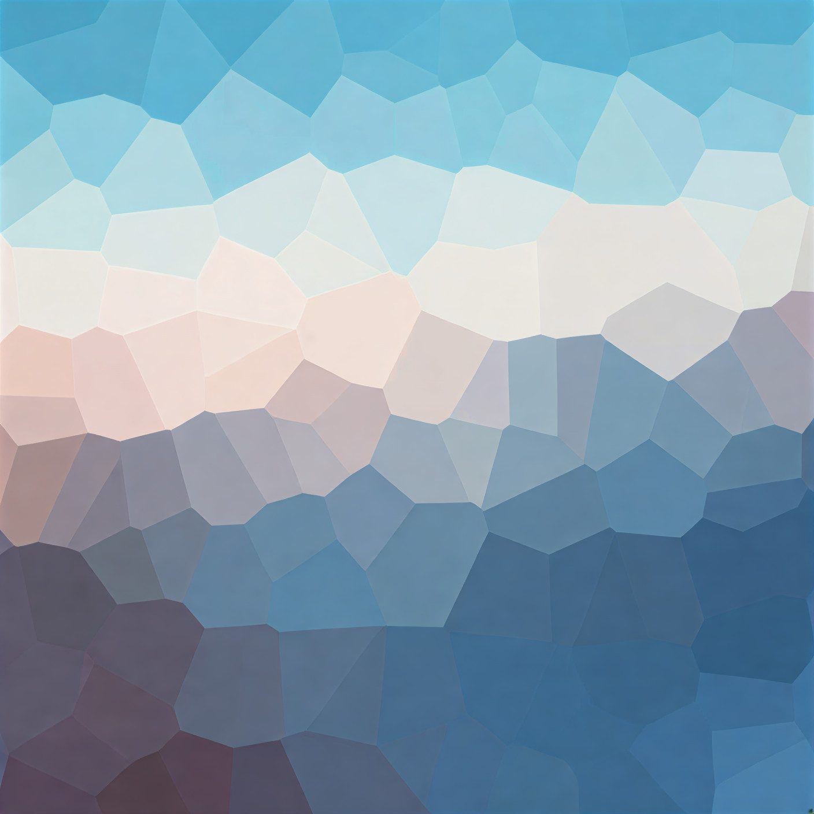

Sample Class Distribution
Visualization of the proportion of MDD patients vs. healthy controls in our dataset. This balance is crucial for unbiased model performance.
Lato. We combined machine learning with microbiome science to develop a predictive model for Major Depressive Disorder. This page outlines the data collection, preprocessing, model training, and validation techniques that powered our analysis.
Downloaded paired-end 16S rRNA sequencing via SRA Toolkit. Samples: 205 total (106 healthy controls, 99 MDD patients). Tool: QIIME 2 v2025.7. Raw reads converted from SRR → FASTQ format and organized by clinical group.
DADA2 removed low-quality reads & chimeras. Results: 13.05M reads retained (94–95% pass-filter). Per-sample reads: Median 63,356 (Range: 33,841–167,939). Chimera rate: 20–35% removed (excellent quality indicator for human stool).
SILVA 138 Naive Bayes classifier assigned ASVs to taxa (Phylum → Genus). Generated 344 unique genera across all samples. Performed Alpha diversity (Shannon Index) and Beta diversity (Bray–Curtis) analysis. Statistical testing: Kruskal–Wallis & PERMANOVA.
Mann–Whitney U tests with Benjamini–Hochberg correction identified 30+ significant genera. Key findings: Bacteroides, Faecalibacterium, Parabacteroides, Blautia, Alistipes significantly altered in MDD. Generated genus-level barplots and correlation matrices.
Extracted relative abundance profiles for top 50–100 discriminative genera. Applied CLR (Centered Log-Ratio) normalization to handle compositional data. Standardized features using Z-score scaling. Created final feature matrix: (205 samples × 100 features).
Algorithm: Support Vector Machine (RBF kernel). Hyperparameter Tuning: Grid search over C ∈ [0.1, 1, 10, 100] and γ ∈ [0.001, 0.01, 0.1]. Class Balancing: SMOTE applied to training set. Validation: 5-fold stratified cross-validation on training data.
Metrics (Hold-out Test Set): Accuracy, Precision, Recall, F1-score, ROC-AUC. Generated confusion matrices and ROC curves for both CV and test sets. Computed 95% confidence intervals via bootstrap resampling (1000 iterations).
Feature Importance: Permutation importance ranked genera by predictive power. Results Interpretation: Identified biological links between discriminative taxa and depression literature. Deployment: SVM model exported for web interface. Interactive predictions now live on this site.
Goal: Compare MDD vs Control microbiomes, identify differentially abundant taxa, build SVM classifier, deploy interactive tool. Data: Public NCBI SRA — paired-end 16S rRNA sequencing, 205 samples (106 Control, 99 MDD).
Tool: SRA Toolkit. Tasks: Download SRR files → Convert to FASTQ paired-end (_R1, _R2) → Organize into fastq_MDD/ and fastq_Control/ directories. Result: ~100K reads per sample, ready for QC.
Create manifest (sample-id, group) and metadata files. Verify SRR accessions match clinical data. Label: MDD or Control for each sample.
Sort FASTQ files into directories by group. Verify read counts and file integrity. Initial quality assessment (FastQC).
Environment: qiime2-amplicon-2025.7 installed. Import: FASTQs → demux-paired-end.qza using QIIME manifest format. Output: Demultiplexed sequences ready for DADA2 denoising.
Generate per-sample quality plots. Identify outliers. Set appropriate read-trimming parameters based on quality profiles.
Double-check manifest file format. Ensure all sample IDs match imported sequences. Test QIIME import dry-run.
Algorithm: DADA2 paired-end denoising. Results: 13,053,793 total reads retained (94–95% pass-filter). Chimera Rate: ~20–35% removed. Output: table.qza (ASV table), rep-seqs.qza (representative sequences), denoising-stats.qza.
Per-sample median: 63,356 reads. Range: 33,841–167,939. Excellent coverage for 16S analysis. No outlier samples removed.
ASV table: 205 samples × ~3,400 unique ASVs. Rarefaction curve shows adequate depth. Ready for taxonomy assignment.
Classifier: SILVA 138 Naive Bayes (pre-trained). Classification Level: Phylum → Genus → potentially Species. Result: 344 unique genera identified. Files: taxonomy.qza with per-ASV assignments.
Phylum-level relative abundances. Generate barplots stratified by MDD vs Control. Visualize dominant taxa (Firmicutes, Bacteroidota).
Remove rare taxa (prevalence < 5% samples or mean abundance < 0.01%). Reduce feature space for downstream analysis.
Alpha Diversity (Shannon): Kruskal–Wallis H=30.34, p=3.6×10⁻⁸ ← HIGHLY SIGNIFICANT. MDD: lower diversity (dysbiosis). Beta Diversity (Bray–Curtis): PERMANOVA pseudo-F=17.36, p=0.001 (999 perms). Clear group separation on PCoA (PC1: 16.09%, PC2: 11.34%, PC3: 7.11%).
Generate Emperor 3D PCoA plots. MDD (red) vs Control (blue) show clear but overlapping clustering — typical for real microbiome data.
Export all p-values and statistics. Generate significance boxplots. Ready for manuscript figures.
Test: Mann–Whitney U (per-genus). Correction: Benjamini–Hochberg FDR. Key Findings (FDR p<0.05): Bacteroides (↓MDD, p=9.07×10⁻¹⁴), Faecalibacterium (↑MDD, p=1.39×10⁻⁷), Blautia (↓MDD, p=1.14×10⁻⁵), Alistipes (↑MDD, p=1.45×10⁻⁵). 30+ significant genera total.
Generate box plots for top 5 & 10 genera by group. Visualize effect sizes and trends consistent with depression literature.
Compare our results to published depression–microbiome studies. Validate biological coherence (Bacteroides↓, Bifidobacterium↓ in MDD).
Feature Selection: Top 50–100 discriminative genera (by effect size & statistical significance). Normalization: CLR (Centered Log-Ratio) transformation to handle compositional data. Standardization: Z-score scaling. Final Matrix: 205 samples × 100 features.
80/20 stratified random split. Preserve MDD/Control ratio in both sets. Seed fixed for reproducibility.
Apply SMOTE on training set to balance minority class (MDD) before model training. Prevent class imbalance bias.
Algorithm: Support Vector Machine, RBF kernel. Hyperparameters: Grid search over C=[0.1, 1, 10, 100], γ=[0.001, 0.01, 0.1]. Validation: 5-fold stratified cross-validation. Best Params: Identified via CV performance.
Rank genera by feature importance (permutation drops). Identify top 10–20 most predictive bacteria for MDD classification.
Plot learning curves and validation curves. Check for under/overfitting. Verify stable CV scores across folds.
Metrics (Hold-out Test): Accuracy, Precision, Recall, F1-score, ROC-AUC, Sensitivity/Specificity. Confusion Matrix: TP, FP, TN, FN. Confidence Intervals: 95% via bootstrap (1000 resamples). ROC Curve: AUC visualization for both CV and test.
Bar plot of top 15 genera by permutation importance. Show biological relevance of top predictors. Link to MDD literature.
Examine misclassified samples. Any patterns in errors? Discuss confounding factors (e.g., diet, antibiotics).
Status: ✅ LIVE & INTERACTIVE. Workflow: Serialize trained SVM (joblib). Build Python backend (Flask/FastAPI) with SVM prediction endpoint. Frontend (HTML/CSS/JS) collects user genus input → sends to backend → returns MDD probability. Site: svm_results.html hosts live SVM interface.
End-to-end testing of web interface. Check input validation and error handling. Responsive design for mobile/desktop.
Write API documentation, methods summary, and user guide. Deploy to production. Make results reproducible (share code & data).
The following bacterial genera showed the strongest association with MDD diagnosis in our model:

Our SVM model employed a radial basis function (RBF) kernel with hyperparameters tuned via grid search. We used 5-fold cross-validation to ensure robust performance estimates and applied stratification to maintain class balance. Feature scaling via standardization was applied before training. We implemented SMOTE (Synthetic Minority Over-sampling Technique) to address any class imbalance and employed permutation importance to rank feature contributions to predictions.
Raw OTU tables were subjected to multiple preprocessing steps. We removed rare taxa present in fewer than 10% of samples and applied centered log-ratio (CLR) transformation to account for the compositional nature of microbiome data. This normalization method preserves relationships between bacterial abundances while addressing the zero-sum constraint inherent in relative abundance data. We also filtered samples with extreme read depths to ensure quality and comparability across the dataset.
We employed a rigorous validation strategy with multiple evaluation phases. Training used 5-fold stratified cross-validation to estimate generalization performance. An independent test set (20% of data) was held out and never used during training or hyperparameter tuning. Performance metrics included accuracy, sensitivity, specificity, precision, recall, F1-score, and ROC-AUC. We also generated confusion matrices and computed confidence intervals for all performance estimates to quantify uncertainty.
Visualization of the proportion of MDD patients vs. healthy controls in our dataset. This balance is crucial for unbiased model performance.